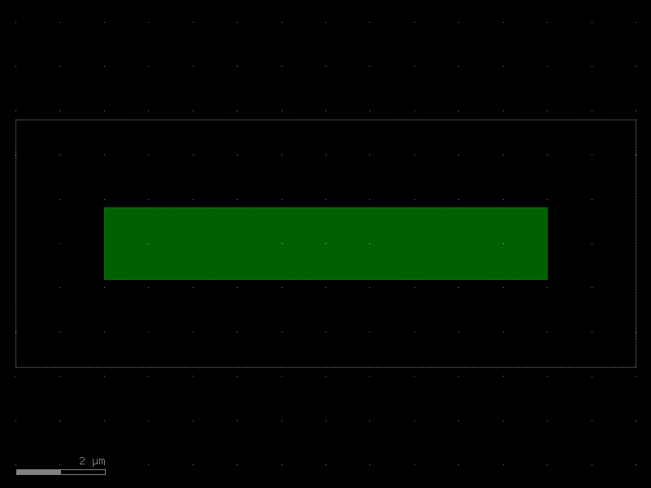
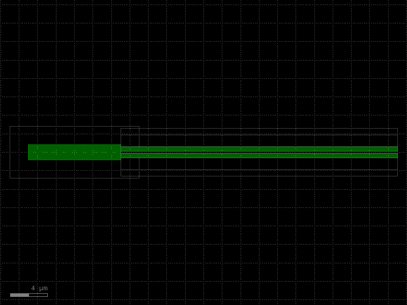

Creating a PDK
A Process Design Kit (PDK) in kfactory is a KCLayout instance plus the layers,
enclosures, cross-sections, and factories that describe your process. Everything lives
in one place so every cell you create is consistent.
A minimal PDK has four ingredients:
| Ingredient | What it does |
|---|---|
KCLayout |
Root container for all cells, dbu setting, and registry objects |
LayerInfos |
Named layer definitions (layer, datatype pairs) |
LayerEnclosure |
Cladding/slab geometry rules around waveguide cores |
| Factories | Functions that stamp cells into the layout (straight, bend, taper, …) |
The section on KCLayout covers the layout object in depth. The section on Cross-Sections covers cross-section registration. This page shows how to wire everything together into a single reusable module.
1 · Layers
Define layers with LayerInfos. Each field is a kdb.LayerInfo(layer, datatype).
Pass the class (not an instance) to KCLayout so the PDK can build its internal
layer index at construction time.
import kfactory as kf
class LAYER(kf.LayerInfos):
WG: kf.kdb.LayerInfo = kf.kdb.LayerInfo(1, 0) # waveguide core
WGCLAD: kf.kdb.LayerInfo = kf.kdb.LayerInfo(2, 0) # cladding oxide
SLAB: kf.kdb.LayerInfo = kf.kdb.LayerInfo(3, 0) # slab (rib process)
METAL: kf.kdb.LayerInfo = kf.kdb.LayerInfo(20, 0) # metal layer
METALEX: kf.kdb.LayerInfo = kf.kdb.LayerInfo(20, 1) # metal keep-out
FLOORPLAN: kf.kdb.LayerInfo = kf.kdb.LayerInfo(99, 0) # die outline
2 · Create a named KCLayout
kf.kcl is the default global layout. For a PDK you create a named layout so that
all your cells carry the PDK name and stay isolated from other layouts in the same
session.
Pass infos=LAYER (the class) so the PDK builds a LayerEnum from your layers. The
instantiated LayerInfos is then available as pdk.infos.
Tip: Call
KCLayoutonce at module level and import the resulting object everywhere in your PDK. Never recreate it — eachKCLayoutcall registers a new entry inkf.kcls.
# Create the PDK layout with layers registered.
pdk = kf.KCLayout("MY_PDK", infos=LAYER)
# pdk.infos is the LayerInfos instance; use it for layer objects everywhere.
L = pdk.infos
print(f"PDK: {pdk}")
print(f"dbu: {pdk.dbu} µm/DBU (1 nm grid)")
print(f"WG layer index: {pdk.find_layer(L.WG)}")
PDK: name='MY_PDK' layout=<klayout.dbcore.Layout object at 0x7fa2fcbd2720> layer_enclosures=LayerEnclosureModel(root={}) cross_sections={} enclosure=KCellEnclosure(enclosures=LayerEnclosureCollection(enclosures=[])) library=<klayout.dbcore.Library object at 0x7fa2fcd134d0> factories=<kfactory.layout.Factories object at 0x7fa2fcbe9950> virtual_factories=<kfactory.layout.Factories object at 0x7fa2fcd929e0> generic_factories={} tkcells={} infos=LAYER(WG=WG (1/0), WGCLAD=WGCLAD (2/0), SLAB=SLAB (3/0), METAL=METAL (20/0), METALEX=METALEX (20/1), FLOORPLAN=FLOORPLAN (99/0)) layer_stack=LayerStack(layers={}) netlist_layer_mapping={} sparameters_path=None interconnect_cml_path=None constants=Constants() rename_function=<function rename_clockwise_multi at 0x7fa31bb8a980> thread_lock=<unlocked _thread.RLock object owner=0 count=0 at 0x7fa2fcc54690> info=Info() settings=KCellSettings(version='3.0.0rc4', klayout_version='0.30.9', meta_format='v3') decorators=<kfactory.decorators.Decorators object at 0x7fa2fcbe9e50> default_cell_output_type=<class 'kfactory.kcell.KCell'> default_vcell_output_type=<class 'kfactory.kcell.VKCell'> connectivity=[] routing_strategies={} technology_file=None layers=<aenum 'LAYER'>
dbu: 0.001 µm/DBU (1 nm grid)
WG layer index: WG
3 · Enclosures
A LayerEnclosure describes the cladding/slab geometry added around waveguide cores.
Register it with the layout so routers and cross-sections can look it up by name.
The sections list uses (layer, d_max) for symmetric growth or
(layer, d_min, d_max) for annular (ring) regions. Values are in DBU.
# Standard strip waveguide enclosure: 2 µm oxide cladding.
enc_strip = pdk.get_enclosure(
kf.LayerEnclosure(
name="STRIP",
main_layer=L.WG,
sections=[
(L.WGCLAD, 0, 2_000), # 0–2 µm cladding
],
)
)
# Rib waveguide: cladding + partial slab.
enc_rib = pdk.get_enclosure(
kf.LayerEnclosure(
name="RIB",
main_layer=L.WG,
sections=[
(L.WGCLAD, 0, 2_000), # 0–2 µm cladding
(L.SLAB, 0, 4_000), # 0–4 µm slab
],
)
)
print(f"strip enclosure: {enc_strip.name}")
print(f"rib enclosure: {enc_rib.name}")
strip enclosure: STRIP
rib enclosure: RIB
4 · Cross-sections
A cross-section pairs an enclosure with a core width and bend-radius hints.
DCrossSection accepts µm; it converts to DBU when registered in the layout.
Cross-sections are stored in pdk.cross_sections keyed by name. You retrieve
them later with pdk.get_icross_section("WG_500") (DBU view) or
pdk.get_dcross_section("WG_500") (µm view).
# Strip waveguide — 500 nm core, 2 µm cladding, 10 µm nominal bend radius.
xs_strip = kf.DCrossSection(
kcl=pdk,
width=0.5, # µm
layer=L.WG,
sections=[
(L.WGCLAD, 2.0), # cladding: 0 → 2 µm
],
radius=10.0, # preferred bend radius (µm) — routing hint
radius_min=5.0, # minimum bend radius (µm) — DRC hint
name="WG_500",
)
# Register and obtain the DBU-unit view.
xs_strip_dbu = pdk.get_icross_section(xs_strip)
print(f"cross-section: {xs_strip_dbu.name}")
print(f"core width DBU: {xs_strip_dbu.width} ({pdk.to_um(xs_strip_dbu.width):.3f} µm)")
print(f"radius (µm): {pdk.to_um(xs_strip_dbu.radius):.1f}")
cross-section: WG_500
core width DBU: 500 (0.500 µm)
radius (µm): 10.0
# Rib waveguide — 700 nm core, cladding + slab, 15 µm radius.
xs_rib = kf.DCrossSection(
kcl=pdk,
width=0.7,
layer=L.WG,
sections=[
(L.WGCLAD, 2.0),
(L.SLAB, 4.0),
],
radius=15.0,
radius_min=8.0,
name="WG_700_RIB",
)
pdk.get_icross_section(xs_rib)
print(f"registered cross-sections: {list(pdk.cross_sections.cross_sections)}")
registered cross-sections: ['67c2bf20_500', 'WG_500', '592829b8_700', 'WG_700_RIB']
5 · Factories
A factory is a function that creates cells bound to a specific KCLayout.
Call the factory once with kcl=pdk to get a cell-creation function.
That function is then called with the per-instance parameters.
| Factory | Module | Width/length units |
|---|---|---|
straight_dbu_factory |
kf.factories.straight |
DBU |
bend_euler_factory |
kf.factories.euler |
µm |
bend_circular_factory |
kf.factories.circular |
µm |
taper_factory |
kf.factories.taper |
DBU |
Why two unit systems? Straight waveguides need exact DBU lengths for DRC-clean port placement; bend radii are naturally specified in µm by process specs.
# ── Straight waveguide factory (widths/lengths in DBU) ────────────────────
straight = kf.factories.straight.straight_dbu_factory(kcl=pdk)
# ── Euler bend factory (width and radius in µm) ───────────────────────────
bend_euler = kf.factories.euler.bend_euler_factory(kcl=pdk)
# ── 90° S-bend factory ────────────────────────────────────────────────────
bend_s = kf.factories.euler.bend_s_euler_factory(kcl=pdk)
# ── Taper factory (widths/length in DBU) ─────────────────────────────────
taper = kf.factories.taper.taper_factory(kcl=pdk)
Stamping cells
Call each factory with the desired parameters. The @cell decorator inside every
factory caches the result — calling with the same parameters returns the same object.
wg = straight(
width=pdk.to_dbu(0.5), # 500 nm → DBU
length=pdk.to_dbu(20.0), # 20 µm → DBU
layer=L.WG,
enclosure=enc_strip,
)
bend = bend_euler(
width=0.5, # µm
radius=10.0, # µm
layer=L.WG,
enclosure=enc_strip,
angle=90,
)
tp = taper(
width1=pdk.to_dbu(0.5), # narrow end
width2=pdk.to_dbu(1.0), # wide end
length=pdk.to_dbu(10.0),
layer=L.WG,
enclosure=enc_strip,
)
print(f"straight: {wg}")
print(f"bend90: {bend}")
print(f"taper: {tp}")
straight: KCell(name=straight_CSSTRIP_500_L20000, ports=['o1', 'o2'], pins=[], instances=[], locked=True, kcl=MY_PDK)
bend90: KCell(name=bend_euler_CSSTRIP_500_R10_A90_R150, ports=['o1', 'o2'], pins=[], instances=[], locked=True, kcl=MY_PDK)
taper: KCell(name=taper_CSSTRIP_500_CSSTRIP_1000_L10000, ports=['o1', 'o2'], pins=[], instances=[], locked=True, kcl=MY_PDK)
6 · Custom cells using PDK factories
Build compound cells by combining the primitives. The @pdk.cell decorator caches
the result and enforces port naming.
Important: always pass
kcl=pdkwhen constructingkf.Portobjects inside a custom PDK cell. Without it kfactory defaults to the globalkf.kcllayout, which makes layer indices inconsistent.
@pdk.cell
def mmi_1x2(
width: float = 0.5, # µm — waveguide core width
gap: float = 0.2, # µm — gap between output waveguides
length: float = 10.0, # µm — MMI body length
) -> kf.KCell:
"""1×2 multimode-interference splitter.
Args:
width: Waveguide core width (µm).
gap: Gap between the two output waveguides (µm).
length: MMI body length (µm).
"""
c = pdk.kcell()
# Convert µm to DBU for shape/port placement.
width_dbu = pdk.to_dbu(width)
gap_dbu = pdk.to_dbu(gap)
length_dbu = pdk.to_dbu(length)
# MMI body: wide enough for two waveguides + gap + margin.
body_width_dbu = 2 * width_dbu + gap_dbu + pdk.to_dbu(0.4)
# Core rectangle.
wg_li = pdk.find_layer(L.WG)
c.shapes(wg_li).insert(
kf.kdb.Box(
-length_dbu // 2,
-body_width_dbu // 2,
length_dbu // 2,
body_width_dbu // 2,
)
)
# Cladding rectangle.
clad_margin = pdk.to_dbu(2.0)
c.shapes(pdk.find_layer(L.WGCLAD)).insert(
kf.kdb.Box(
-length_dbu // 2 - clad_margin,
-body_width_dbu // 2 - clad_margin,
length_dbu // 2 + clad_margin,
body_width_dbu // 2 + clad_margin,
)
)
# Input port (West face). Always pass kcl=pdk so the port layer index
# is resolved in the correct layout.
c.add_port(
port=kf.Port(
name="o1",
trans=kf.kdb.Trans(2, False, -length_dbu // 2, 0),
width=width_dbu,
layer=wg_li,
port_type="optical",
kcl=pdk, # required when using a custom KCLayout
)
)
# Two output ports (East face), vertically offset by ±(width+gap)/2.
y_out = (width_dbu + gap_dbu) // 2
for name, y in [("o2", y_out), ("o3", -y_out)]:
c.add_port(
port=kf.Port(
name=name,
trans=kf.kdb.Trans(0, False, length_dbu // 2, y),
width=width_dbu,
layer=wg_li,
port_type="optical",
kcl=pdk,
)
)
return c
splitter = mmi_1x2()
print(f"mmi_1x2 ports: {[p.name for p in splitter.ports]}")
splitter.plot()
mmi_1x2 ports: ['o1', 'o2', 'o3']

7 · Assembling a circuit
Use << to place cells (returns an Instance) and connect() to snap ports together.
The following builds a simple Y-splitter + arms circuit to show the assembly pattern.
@pdk.cell
def splitter_arms(arm_length: float = 50.0) -> kf.KCell:
"""Y-splitter followed by two straight waveguide arms.
Args:
arm_length: Length of each output arm (µm).
"""
c = pdk.kcell()
# Place splitter at the origin.
sp = c << mmi_1x2()
# Straight arm cell — length is the same for both arms.
arm_wg = straight(
width=pdk.to_dbu(0.5),
length=pdk.to_dbu(arm_length),
layer=L.WG,
enclosure=enc_strip,
)
top_arm = c << arm_wg
bot_arm = c << arm_wg
# Snap arm inputs to the splitter outputs.
top_arm.connect("o1", sp, "o2")
bot_arm.connect("o1", sp, "o3")
# Expose the circuit ports (pass name= to rename on the parent).
c.add_port(port=sp.ports["o1"], name="o1")
c.add_port(port=top_arm.ports["o2"], name="o2")
c.add_port(port=bot_arm.ports["o2"], name="o3")
return c
fork = splitter_arms(arm_length=30.0)
print(f"splitter_arms ports: {[p.name for p in fork.ports]}")
fork.plot()
splitter_arms ports: ['o1', 'o2', 'o3']

8 · PDK module pattern
In a real project you package the code above as a Python module, for example
my_pdk/__init__.py. Other design files then do:
from my_pdk import pdk, L, straight, bend_euler, taper, mmi_1x2
c = pdk.kcell()
wg = straight(width=pdk.to_dbu(0.5), length=pdk.to_dbu(20), layer=L.WG)
...
The recommended structure is:
my_pdk/
__init__.py — re-exports pdk, L, factories, cells
layers.py — LAYER(LayerInfos) class
enclosures.py — enc_strip, enc_rib, …
cross_sections.py — xs_strip, xs_rib, …
cells/
__init__.py
mmi.py — mmi_1x2, mmi_2x2, …
ring.py — ring_resonator, …
factories.py — straight, bend_euler, taper, …
All modules import pdk from the top-level __init__.py so they share one
KCLayout object.
Note: the
KCLayoutconstructor takesinfos=LAYER(the class), not an instance. The resultingLayerInfosinstance is available aspdk.infos.
9 · GDS export
When the design is complete, write the whole layout to a GDS file.
All cells registered in pdk (including sub-cells) are written in one call.
import pathlib
import tempfile
with tempfile.TemporaryDirectory() as tmp:
gds_path = pathlib.Path(tmp) / "my_pdk.gds"
pdk.write(str(gds_path))
size = gds_path.stat().st_size
print(f"Written: {gds_path.name} ({size} bytes)")
print(f"Top cells: {[c.name for c in pdk.top_kcells()]}")
Written: my_pdk.gds (12422 bytes)
Top cells: ['straight_CSSTRIP_500_L20000', 'bend_euler_CSSTRIP_500_R10_A90_R150', 'taper_CSSTRIP_500_CSSTRIP_1000_L10000', 'splitter_arms_AL30']
See Also
| Topic | Where |
|---|---|
| Layer stacks & technology data | PDK: Technology |
| Cross-sections (port geometry) | Cross-Sections |
| Layer enclosures (auto-cladding) | Enclosures: Layer Enclosure |
| PCells & caching | Components: PCells |
| Factory functions reference | Components: Factories |
| Session caching (fast reload) | Utilities: Session Cache |